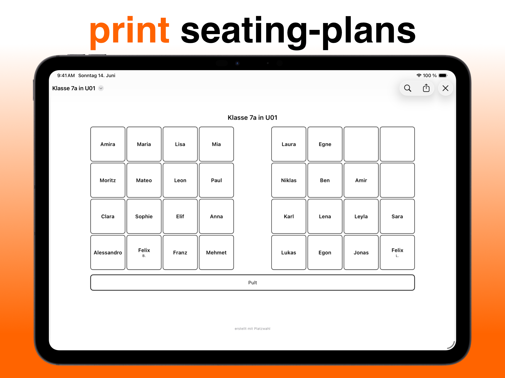

Seating Chart App for iPad & iPhone
Excel grids, paper snippets, web forms — there are many ways to a seating chart, but only one fits in your pocket and knows your rules. Here's what a good seating chart app must do, and why privacy is the single most important criterion.
Why an app instead of Excel or paper?
A seating chart isn't a one-off document — it's a tool that changes constantly: new students, new conflicts, new semester. An app beats a spreadsheet in three decisive ways:
- Rules instead of cells: "keep these two apart" is a rule the app checks on every recomputation — not a state you have to rebuild by hand.
- Automatic optimization: an algorithm tries thousands of combinations. You don't.
- Always with you: change the chart during recess, right on your iPad, and send the PDF to the staff room.
The most important criterion: privacy
Student names are personal data. Online seating tools that store names on third-party servers are simply off-limits at many schools. So pay attention to where an app keeps its data. Platzwahl stores everything locally on your device — no cloud, no account, no data transfer to anyone.
Platzwahl at a glance
- Room editor: rebuild your classroom as a grid — any layout from rows to table groups
- Class management: add students individually or import the whole class via CSV
- Per-student rules: disruption level, front-row seat, separations, preferred neighbors
- Genetic algorithm: computes the optimal chart and explains every rule deviation with a score
- PDF export: a print-ready chart in one tap
- For iPhone & iPad from iOS 17, free on the App Store

Get Platzwahl for free
Free download · iPhone & iPad · iOS 17+ · No account needed
Frequently asked questions
Is the seating chart app free?
Yes. Platzwahl is free on the App Store. Platzwahl Pro is an optional purchase that unlocks unlimited rooms, groups, and charts.
Does the app work offline?
Yes, completely. Since all data is stored locally, you need neither an internet connection nor an account — even in classrooms without Wi-Fi.
Is student data safe?
Platzwahl never transmits student data to a server — all names and rules stay on your device. That removes the biggest privacy hurdle of web-based tools.